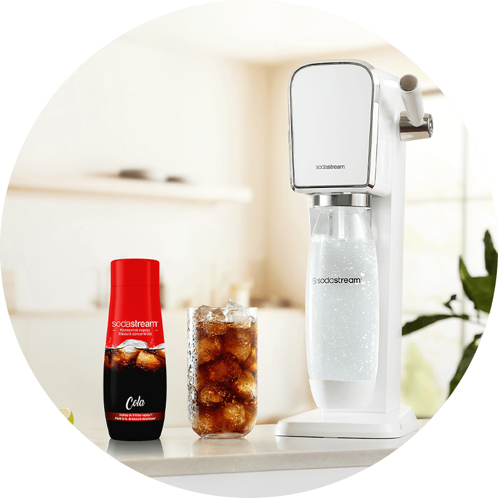

Syrop
SODASTREAM
SYROP COLA, 440 ML
Jesteś fanem coli i jednocześnie pragniesz dbać o swoje zdrowie? Przygotuj zdrowszą wersję coli z wody z kranu i syropu Cola we własnym domu. Cola przygotowana z syropu SodaStream to zdrowsza alternatywa klasycznych napojów ze sklepowych półek, którą możesz mieć zawsze pod ręką. Dodatkowo bąbelkując w ekspresie SodaStream skutecznie ograniczysz zużycie jednorazowych butelek plastikowych.
jedna sodastream
wiele możliwości
KLASYCZNY SMAK COLI W ZDROWSZEJ ODSŁONIE
Syrop SodaStream nie zawiera syropu kukurydzianego ani sztucznych barwników. Oprócz tego cola przygotowana z syropu SodaStream ma o połowę mniej kalorii niż jej sklepowe odpowiedniki. Dzięki temu możesz cieszyć się klasycznym smakiem i zadbać o swoje zdrowie.

gazuj
miksuj
smakuj
Cola to niezastąpiona baza wielu znanych i lubianych drinków. Jest ona bohaterką takich klasyczny pozycji jak: cola z whisky, cola z wódką czy cuba libre.
JEDNA SODASTREAM - WIELE MOŻLIWOŚCI
Przygotuj się na prawdziwą eksplozję smaków z SodaStream! Odkryj nieograniczoną różnorodność gazowanych napojów, które możesz stworzyć za pomocą jednego urządzenia. W naszej bogatej ofercie znajdziesz zarówno klasyczne smaki, jak i oryginalne kompozycje SodaStream, takie jak soczysty Pink Grapefruit, tropikalny Orange Mango czy oszałamiający Cloudy Lemonade. Nie ma ograniczeń dla Twojej wyobraźni, pozwól jej rozkwitnąć dzięki SodaStream!

SPRAWDŹ NASZ PRZEPIS NA ORZEŹWIENIE
#PushForBetter